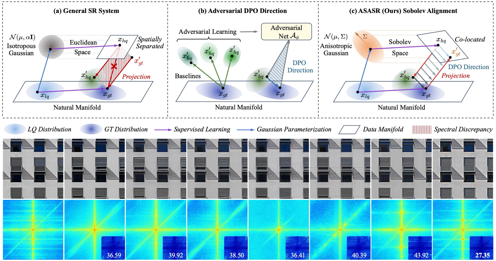
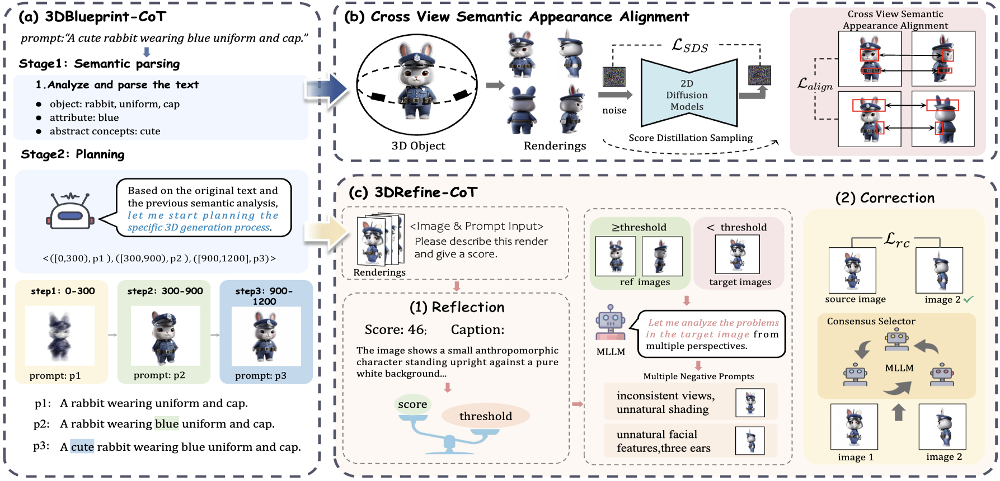
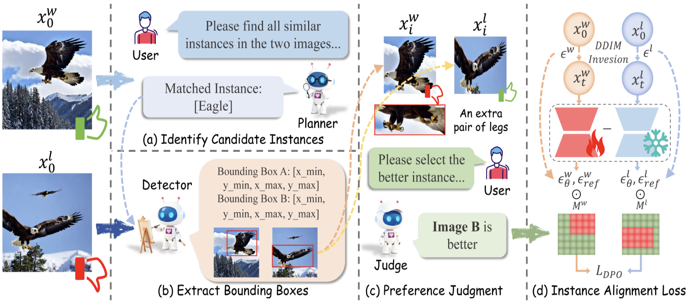
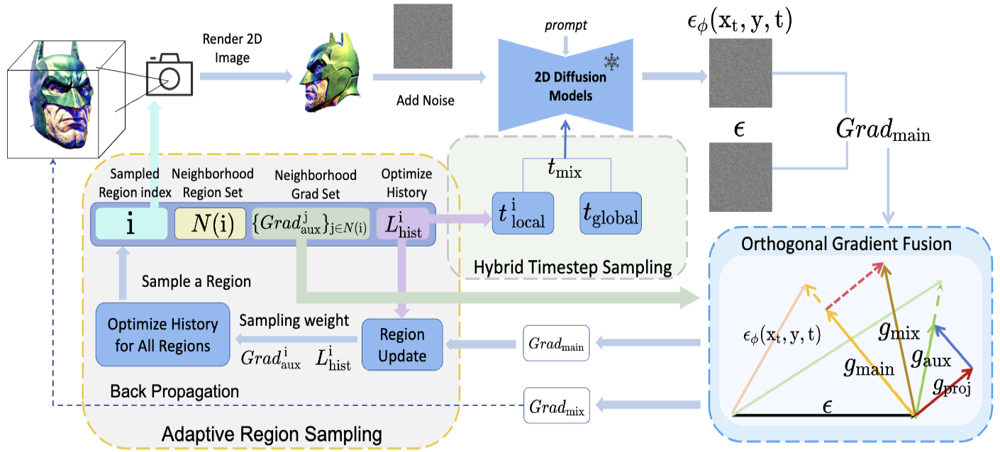
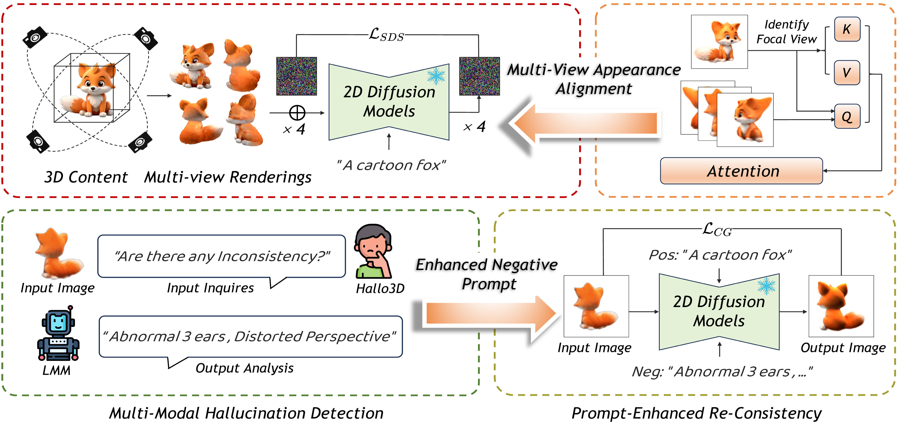

😎 About Me
I am Hongbo Wang, a second-year PhD student at NLPR@CASIA, Institute of Automation of the Chinese Academy of Sciences, supervised by Prof. Ran He. Before that, I received my B.E. degree from Beijing Institute of Technology in 2024. I am fortunate to have internships and collaborations with Kuaishou.
My current research interests include VLM Alignment and Generative Vision.
🔥 News
- 2026-06 : 🎉 Our paper TCPO is accepted to ECCV 2026.
- 2026-05 : 🎉 Our paper ASASR is accepted to ICML 2026.
- 2026-02 : 🎉 Our 2 papers Thoughtful3D and IAPO are accepted to CVPR 2026.
- 2025-12 : 🎉 Our paper CoGrad3D is accepted to AAAI 2026.
- 2025-10 : 🏆 Awarded the National Scholarship for Graduate Students (Top 0.2% Nationwide).
- 2024-09 : 🎉 Our paper Hallo3D is accepted to NeurIPS 2024.
📝 Publications


Think-Then-Generate: Structural Chain-of-Thought Reasoning for Consistent 3D Generation
CVPR 2026 [Paper]

Towards Fine-Grained Attribution: Instance-Aware Preference Optimization for Aligning Diffusion Models
CVPR 2026 [Paper]

CoGrad3D: Spatially-Coupled Timestep Optimization with Orthogonal Gradient Fusion for 3D Generation
AAAI 2026 [Paper]

Hallo3D: Multi-Modal Hallucination Detection and Mitigation for Consistent 3D Content Generation
NeurIPS 2024 [Paper]
🎖 Honors and Awards
- 2025 National Scholarship for Graduate Students (Top 0.2% Nationwide)
- 2024 Outstanding Graduate of Beijing (Top 0.5%)